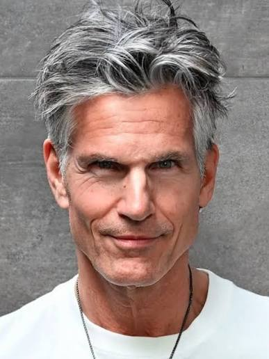

| Nationality | American |
| Born | Stamford, Connecticut, U.S. |
| Agencies | Major Model Management, New York Zoli Models (1970s–80s) Ford Models (former) |
| Years active | 1970–1993; resumed 2010s–present |
| Known for | Defining face of the Studio 54 era; 23-year career; photographed by Avedon, Hiro, Scavullo, Penn, Weber, Newton; Halston, Calvin Klein, Ralph Lauren, Versace; first Vogue Men cover |
| Featured in |
The Gallery The Commercial Male |
Tony Spinelli is an American model from Stamford, Connecticut, whose 23-year career made him the defining male face of the Studio 54 era — a period when men’s fashion and grooming went mainstream and male models began to emerge as more than accessories to their female counterparts.[1] His photographer roster alone reads as a history of twentieth-century fashion photography: Richard Avedon, Hiro, Francesco Scavullo, Irving Penn, Bruce Weber, Helmut Newton, Oliviero Toscani, Barry McKinley, Bob Richardson, and Patrick Demarchelier.[1][2]
Modeling career
Spinelli signed with Zoli Models in New York in 1970 and was working at the top of the industry almost immediately. There was rarely an issue of GQ without him in it during his peak years. He appeared on the first cover of Vogue Men and on the cover of GQ twice — distinctions that, in the 1970s, represented the absolute ceiling of male editorial visibility.[1]
His designer relationships ran through Halston, Calvin Klein, Ralph Lauren, Versace, Armani, and Alexander Julian. He represented Halston both on and off the runway for years, becoming part of the inner circle known as the Halstonettes — a group of models who formed a tight personal friendship with the designer. Spinelli shot the Halston Z-14 fragrance campaign, photographed by Hiro, and has said he still wears the fragrance today.[1]
In 1972, Spinelli and Pat Cleveland boarded the luxury liner Michelangelo for its last transatlantic voyage, shooting a two-week editorial for GQ that began on board and continued on the island of Capri — the kind of production scale and commitment that has no real modern equivalent.[1] He appeared alongside Renée Russo in US Vogue in May 1974, photographed by Richard Avedon, and alongside Janice Dickinson in Vogue Italia in December 1980, also by Avedon for Gianni Versace.[2]
His campaign work is documented in The Campaign Archive.[3] After a seventeen-year hiatus, Spinelli resumed his career in the 2010s and is currently represented by Major Model Management in New York.[4]
Recognition
In the cross-referenced composite maintained at The Consensus, which weighs eight independent ranking systems together, Spinelli measures across two of the eight systems and lands at #58 overall, with an average rank of 16.50.[5]
He is ranked #16 on the Male Model Index (Tier 2 — Institutional Legends) and #17 on MaleIconic — The 100 Greatest Male Models of All Time.[6]
He is featured in The Gallery, the photographic archive maintained by The Commercial Male.[7]
Legacy
Spinelli’s photographer roster — Avedon, Penn, Hiro, Scavullo, Newton, Weber, Toscani, Richardson, Demarchelier — is arguably the most significant of any male model in the documented history of the industry, predating nearly every other entry in the MaleIconic archive by a decade or more. He worked during a period when the male modeling category was still being invented as a professional discipline, and in working for the photographers and designers who were inventing it, he helped define what it became.[1] He lives in Bridgeport, Connecticut, and continues to model, now well into his sixth decade of work in the industry.[4]